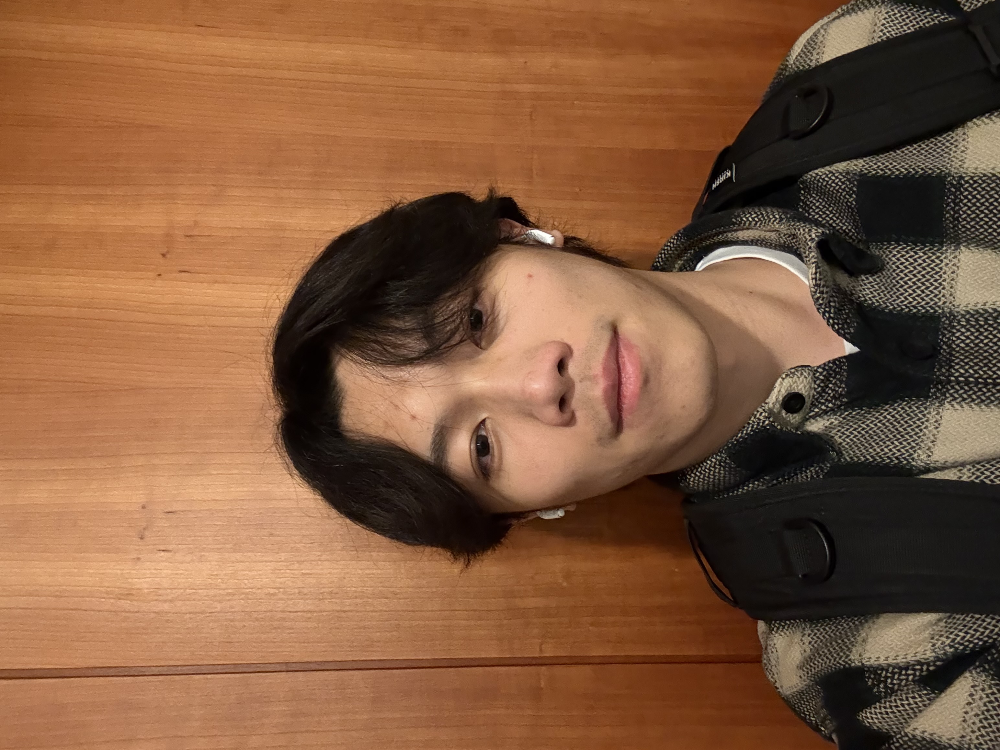

I am a Master's student in Mechanical Engineering at the University of Washington and a Research Assistant in the Robot Learning Lab.
Prior to UW, I did my undergraduate research at the MARS Lab at NCKU and interned as a Data Engineer at AUO-Digitech.
My focus is at the intersection of robot learning, autonomous systems, and embodied AI, with the goal of building systems that perceive, reason, and act reliably in the real world.
| May 2026 | Joined the Robot Learning Lab at UW as a Research Assistant. |
| Jan 2026 | Joined the Washington Aerial Robotics at UW as a Robotics Autonomy Researcher. |
| Sep 2025 | Started my Master's at the University of Washington. |
| Sep 2024 | Finished internship as Data Engineer at AUO-Digitech. |
| Jun 2024 | Graduated from MARS Lab at National Cheng-Kung University. |